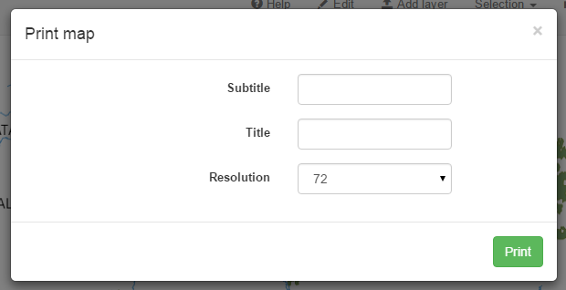

The print component creates ready-to-print PDF documents based on the current map.
In the Print menu, select the layout configuration to use. A new dialog opens, to configure the printing operation.
Select the resolution to use for the PDF file. A larger resolution will mean a longer time to create the file.
If the layout contains labels, the dialog will include text fields to edit the content of the labels
The extent of the map rendered in the PDF is the current extent of the map viewer in the web app. Adjust it using the pan and zoom controls before opening the print dialog.
. Click OK to close the dialog and the file will be created and downloaded.